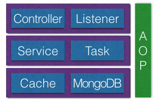

log-server是为服务器提供监控报警等功能的一个服务，由于上线前后有很多其他任务要完成，所以只能抽零碎时间先写了一个能跑起来的用着。一直想找个机会重构一下（程序员的洁癖），前段时间空了一些，所以专门抽时间重新写了一下。在过程中遇到不少问题，有些花了不少时间google，所以觉得有必要记录一下。备忘同时也算是分享吧。
SpringMVC容器问题
一个基于SpringMVC的web应用，结构如下图所示。

启动时，需要将Mongodb中的配置信息加载到cache中，进行初始化。通常我们会实现ServletContextListener来做初始化的工作。由于初始化配置的逻辑是通过一个service来做的，所以在Listener中通过@Resource注入对应的Service。在web.xml中加入listener的配置，然后运行，会出现异常javax.naming.NameNotFoundException（如果通过@Autowired注入，则是java.lang.NullPointerException）。原因是一样的：listener中的Service注入失败了。
1 2 3 4 5 6 7
| public class InitListener implements ServletContextListener { @Resource private InitService initService; }
|
无效的注入
为什么会注入失败呢？原因很简单，因为我们实现的Listener本身并不是IOC容器中的bean，在非容器中的bean里通过注解的方式注入容器中的bean肯定是会失败的。怎么办呢？我们可以先获取到Spring容器的实例，再从容器中取出需要的bean（InitService已经通过@Service注解或xml配置文件注入到容器中）。
1 2 3 4 5 6 7
| @Override public void contextInitialized(ServletContextEvent event) { WebApplicationContext springContext = WebApplicationContextUtils .getRequiredWebApplicationContext(event.getServletContext()); InitService initService = springContext.getBean(InitService.class); initService.test(); }
|
再运行一次程序，发现。。。还是不行！异常信息：java.lang.IllegalStateException: No WebApplicationContext found: no ContextLoaderListener registered?。
ContextLoaderListener
使用SpringMVC时，我们通常会在web.xml配置DispatcherServlet初始化Spring的IOC容器，拦截*.do的请求给controller处理。
1 2 3 4 5 6 7 8 9 10 11 12 13
| <servlet> <servlet-name>logserver</servlet-name> <servlet-class>org.springframework.web.servlet.DispatcherServlet</servlet-class> <init-param> <param-name>contextConfigLocation</param-name> <param-value>/WEB-INF/logserver-servlet.xml</param-value> </init-param> <load-on-startup>1</load-on-startup> </servlet> <servlet-mapping> <servlet-name>logserver</servlet-name> <url-pattern>*.do</url-pattern> </servlet-mapping>
|
为什么在Listener中找不到WebApplicationContext呢？
首先我们要搞清楚web程序启动时的初始化顺序：Listener > Filter > Servlet。找到Spring源码中的DispatcherServlet.java可以看到它最终是实现了HttpServlet。
1 2 3
| public class DispatcherServlet extends FrameworkServlet public abstract class FrameworkServlet extends org.springframework.web.servlet.HttpServletBean public abstract class HttpServletBean extends javax.servlet.http.HttpServlet implements org.springframework.core.env.EnvironmentCapable, org.springframework.context.EnvironmentAware
|
所以答案很明显，因为DispatcherServlet在Listener之后初始化，而Spring容器是通过DispatcherServlet是产生的，Listener中当然找不到WebApplicationContext了。
我们注意到异常的提示中还有一个信息：no ContextLoaderListener registered?，没有注册ContextLoaderListener。我们在源码中找到ContextLoaderListener.java。
1 2 3 4 5 6 7 8
| * Bootstrap listener to start up and shut down Spring's root {@link WebApplicationContext}. * Simply delegates to {@link ContextLoader} as well as to {@link ContextCleanupListener}. * ... */ public class ContextLoaderListener extends ContextLoader implements ServletContextListener { ... }
|
再想一下上面说的初始化顺序，很明显，我们应该用ContextLoaderListener来初始化Spring容器。在web.xml中加入如下配置。
1 2 3 4 5 6 7
| <context-param> <param-name>contextConfigLocation</param-name> <param-value>classpath:/application-context.xml</param-value> </context-param> <listener> <listener-class>org.springframework.web.context.ContextLoaderListener</listener-class> </listener>
|
由于InitListener中需要用到Spring容器，所以要注意把ContextLoaderListener放在InitListener前面。再次运行程序，搞定了！
等等，事情还没完。
运行成功以后看log发现，所有Task的Scheduled方法都重复执行了，也就是说所有task都被初始化了两次，猜测应该是每个Task被实例化了两次导致。
1 2 3 4 5 6 7 8 9 10 11 12 13
| @Service public class TestTask { private static final Logger logger = LoggerFactory.getLogger(TestTask.class); public TestTask() { logger.info("TestTask create"); } @Scheduled(fixedRate = 10000L) public void run() { logger.info("TestTask run()"); } }
|
运行发现，确实TestTask create了两次。为什么呢？因为ContextLoaderListener和DispatcherServlet都会根据xml配置初始化容器。
而两个xml中都有下面的配置。
1 2 3 4
| <context:annotation-config/> <task:annotation-driven/> <aop:aspectj-autoproxy proxy-target-class="true"/> <context:component-scan base-package="org.lic.logserver"/>
|
我们把logserver-servlet.xml中的scan目录改成只扫描controller所在的包。
1
| <context:component-scan base-package="org.lic.logserver.controller"/>
|
而application-context.xml中排除controller包
1 2 3
| <context:component-scan base-package="org.lic.logserver"> <context:exclude-filter type="regex" expression="org.lic.logserver.controller"/> </context:component-scan>
|
再次运行，发现Scheduled方法已经按希望的方式，每隔10s执行一次。
Spring-aop问题
虽然Scheduled方法已经运行正确，但是通过log可以看到Task的构造方法确还是被执行了两次。这里应该感到很奇怪，为什么构造方法执行了两次，Scheduled方法却没有呢？
1
| <aop:aspectj-autoproxy proxy-target-class="true"/>
|
由于在spring的xml中配置了aop的动态代理，导致所有被织入了切面的类都会创建AOP代理。这会产生两次构造器调用，第一次是目标类的构造器调用，第二次是代理类的构造器调用。所以织入了AOP切面的目标类，不应在构造方法中做过多处理，以免因为两次调用带来其他影响。（关于AOP动态代理的问题，可以单独拿出来说一说）
Fastjson的toJSONString问题
四个常用的处理json的类库：Gson、Jackson、Fastjson、Json-lib。其中Fastjson由阿里巴巴公司开发，性能较为突出。
由于在log-server中需要把收集的数据持久化到MongoDB，因此需要把JavaBean转成json存储。
让所有需要持久化的Bean继承AbstractBean。
1 2 3 4 5 6 7
| public abstract class AbstractBean { @Override public String toString() { return JSON.toJSONString(this); } }
|
在使用过程中发现有一个Bean的其中一个属性没有被写到json中，对比了其它属性发现，只有一个不同点：这个属性没有对应的getter方法。给它加上getter方法后发现，果然可以了。问题虽然解决了，可是这只是猜想，下面我们就去求证一下。
首先去github上找到fastjson的源码clone一份，导入以后找到JSON.java中的toJSONString方法。
1 2 3 4 5 6 7 8 9 10 11 12 13 14 15 16 17 18 19 20
| public static final String toJSONString(Object object) { return toJSONString(object, new SerializerFeature[0]); } public static final String toJSONString(Object object, SerializerFeature... features) { SerializeWriter out = new SerializeWriter(); try { JSONSerializer serializer = new JSONSerializer(out); for (com.alibaba.fastjson.serializer.SerializerFeature feature : features) { serializer.config(feature, true); } serializer.write(object); return out.toString(); } finally { out.close(); } }
|
其中最重要的一句是serializer.write(object);，顺着往下找.
1 2 3 4 5 6 7 8 9 10 11 12 13 14 15
| public final void write(Object object) { if (object == null) { out.writeNull(); return; } Class<?> clazz = object.getClass(); ObjectSerializer writer = getObjectWriter(clazz); try { writer.write(this, object, null, null, 0); } catch (IOException e) { throw new JSONException(e.getMessage(), e); } }
|
这里最重要的一句是writer.write(this, object, null, null, 0);。ObjectSerializer是一个接口，getObjectWriter(clazz)会根据不同类型的Object返回对应的子类。我们找到对应的JavaBeanSerializer，其中的write方法就是最后我们要找的地方了，这个方法比较长就不贴出来了。从方法中可以看到我们的猜测是对，私有成员属性，必须要有对应的get方法才能被写入json中。
总结：JaveBean中，所有getXXX方法都会被写入到json中（除了一些特殊的名字以外），所有的共有成员属性会被写到json中。私有成员属性不会，static类型属性不会。
文件读取乱码问题
一般从文件中读取文本内容时，会用下面的方法。
1
| BufferedReader reader = new BufferedReader(new FileReader(new File(path)));
|
但是由于文件的编码格式的原因，读取中文时可能会出现乱码问题，可以改用下面的方法指定编码格式。
1
| BufferedReader reader = new BufferedReader(new InputStreamReader(new FileInputStream(new File(path)), "utf-8"));
|